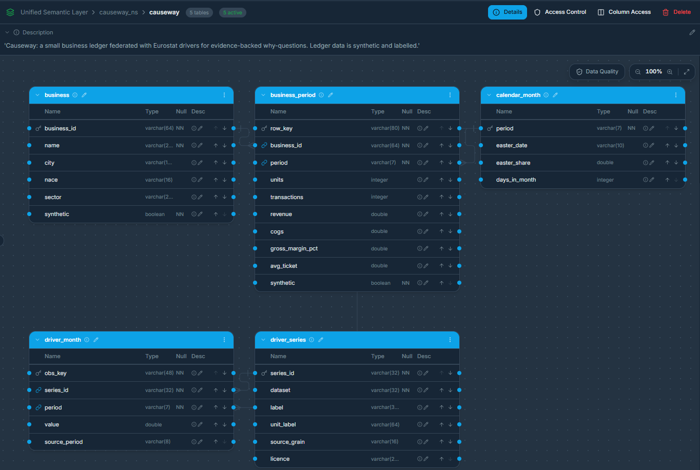
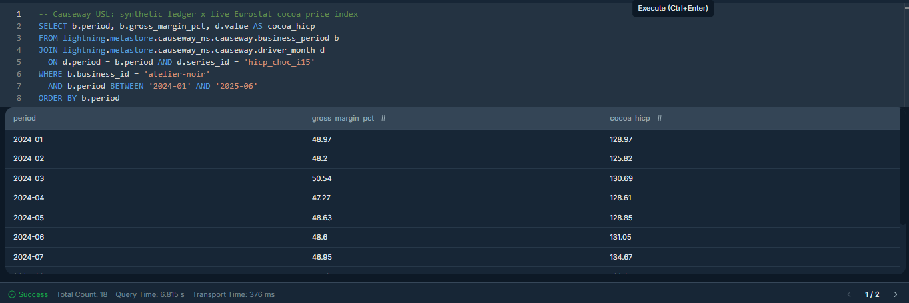
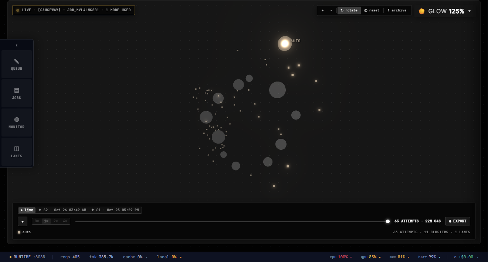
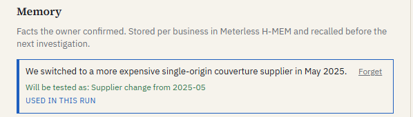
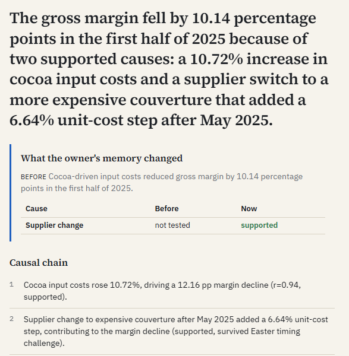
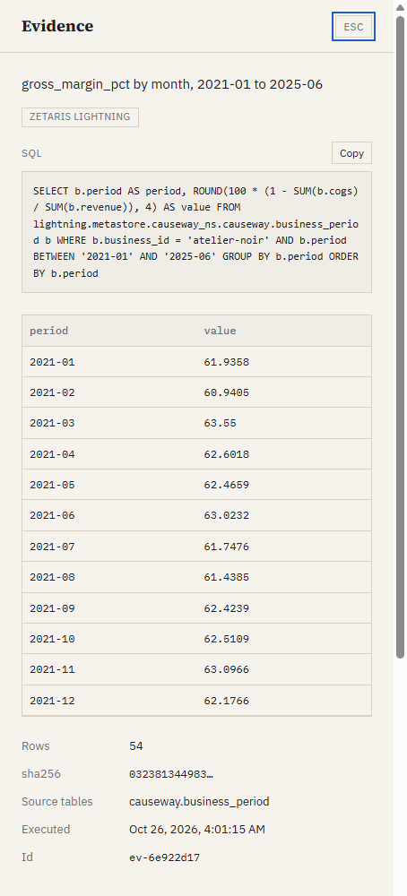

a metric or period the question states is parsed by code and wins
Hypothesise
proposes rival causes
typed catalogue; out-of-catalogue proposals are rejected
Test
—
SQL on the Zetaris USL; z-scores, lagged association, contribution share; a rule table decides supported / contradicted
Challenge
Skeptic names a confounder
the confounder is tested; “nothing explains it” is challenged too
Explain
Writer drafts prose
Verifier re-executes queries (hash match); strikes numbers not in the evidence, wrong pp units, untested causes and numbers credited to the wrong cause
Causeway05
Zetaris · the only data path


Real Zetaris UI · USL “causeway” · SQL Workspace: synthetic ledger × live Eurostat cocoa index
Ledger and public drivers in one semantic layer.
Federated: PostgreSQL ledger datasource + 7 Eurostat REST tables, unified in the USL causeway (5 tables, 4 foreign keys).
Every number has a query: the Analyst only runs SQL on the USL; each result is hashed and cited.
Replayable: a snapshot of the USL replays hash-identical (5/5 tables, 3/3 joins).
Live data moves: on 24 Oct Eurostat republished retail volume with an empty month; the parity check caught it, and one REST table was recreated.
Causeway06
Meterless · Nightshift and the engines

Real Nightshift 1.2.3 window · live job “[Causeway]” · attempts and requests rise while Causeway runs
Nightshift is the primary provider.
Every reasoning call is routed by Nightshift to Nemotron 3.5, and receipts record the routed model: 316 calls across 7 Bench runs, all answered, 0 failovers.
One scope per investigation. Nightshift injected its own stored memories into our prompts; a per-run scope keeps every run independent.
H-MEM holds what the owner confirmed · World Model is the evidence graph · Markovian carries state between Skeptic rounds.
The owner adds one fact. The next answer tests it.
“We switched to a more expensive single-origin couverture supplier in May 2025.” It is stored in H-MEM, mapped to a testable cause with a start month, and recalled before the next investigation.


Real re-ask on Zetaris: supplier change goes from “not tested” to “supported” (unit-cost step z = 11.36), after surviving the Skeptic’s Easter challenge
Causeway08
Every claim has a receipt
Click any claim: the SQL, the rows and the hash.
The Verifier re-executes every cited query and compares the result hash before the owner sees the card.
It strikes a claim whose number is in no evidence, whose “percentage points” are not pp in the evidence, that names a cause never tested, or that credits a number to the wrong cause.
A struck claim goes back to the Writer once; the headline verdict falls back to a code-built one.

Causeway09
Causeway Bench · measured, not claimed
12 cases on 8 synthetic businesses with a hidden ground truth, driven by real Eurostat series.
12/12
main cause found
2/2
“nothing external explains it” controls passed
0
ungrounded numbers in the final prose
One false support, in every run (B11). For a bike shop, Belgian retail bankruptcies rose 11 % and track the synthetic sales at r = 0.54, which passes a rule a shared trend can satisfy. It is a clean holdout case, so we report it instead of tuning the rule after seeing it.
Run through Meterless Nightshift, snapshot of the Zetaris USL. Tune/holdout split; holdout cases that ever prompted a fix are listed as no longer clean. Every run, including a miss (11/12 before a Framer fix), is in bench/RUNS.md.
Measures recovery of planted causes, not real-world causality.